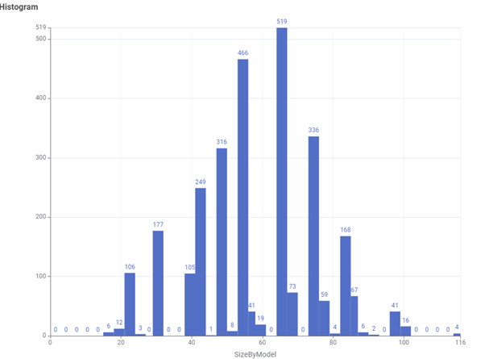
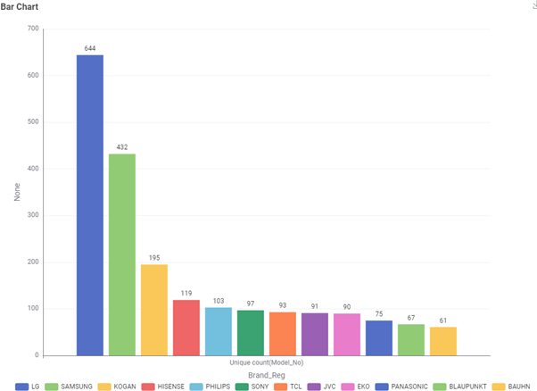
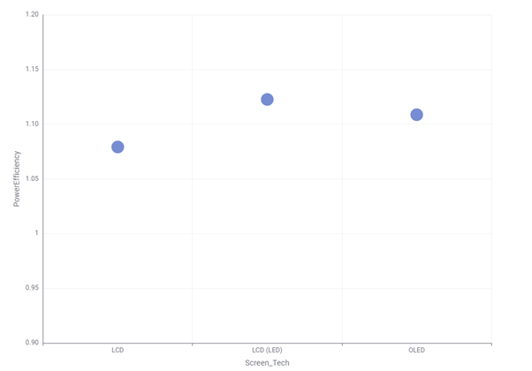
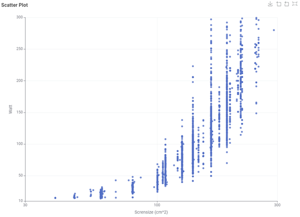

Televisions & Energy
This section explores data from the Australian Government’s Energy Rating for Household Appliances dataset, focusing on televisions. The goal is to provide insights for retailers to help decide which TV models to stock and how energy efficiency affects the market.
Target Audience
The analysis is most useful for TV retailers. By understanding which types of televisions are popular, how brands differ in the number of models they offer, and how energy efficiency varies, retailers can make smarter stocking decisions and reduce inventory costs.
Key Questions
- What type of TV technology (LCD, LED, OLED) do consumers most often buy?
- Which screen sizes are the most popular?
- Which brands offer the largest number of models?
- Which TV types consume the least amount of power?
- How does screen size relate to power consumption?
- What is the relationship between star ratings and screen size?
Findings
TV Technology

LCD (LED) is by far the most common technology, followed by standard LCD and OLED. This suggests that LCD-based TVs dominate the market, while OLED is a niche but growing segment.
Screen Sizes
Most televisions fall into mid-range sizes, particularly around 55, 60, and 65 inches. These sizes represent the most popular consumer choice.
Brands
Brands like Samsung and LG offer the widest range of models, giving them a strong market presence. The more models a brand provides, the more likely they are to be picked by retailers and consumers.
Power Efficiency
Different technologies show differences in power efficiency, but not by a wide enough margin to be a strong selling point. Instead, power use is more directly tied to screen size.
Screen Size and Power Consumption
Larger screen sizes almost always use more power. This shows screen size is the main driver of energy consumption, although technology and design also play a role.
Star Ratings

There is little correlation between star rating and screen size. Star ratings are designed to normalize for size, so retailers should not assume smaller TVs automatically score better.
Conclusion
Overall, the dataset shows that TV retailers should focus on mid-sized LCD/LED models (55–65 inches), particularly from brands with strong product variety like Samsung and LG. Power consumption increases with screen size, but efficiency differences between technologies are relatively small. Star ratings provide an independent efficiency measure and should be considered when promoting models to environmentally conscious customers.
About Us
This analysis was conducted as part of a comprehensive study on household appliance energy consumption. Our research focuses on making energy efficiency data accessible and actionable for both industry professionals and consumers.
Methodology
Our analysis is based on official Australian Government data from the Energy Rating for Household Appliances dataset. We used statistical analysis and data visualization techniques to identify patterns and trends in energy consumption across different appliance categories.
Data Sources
The primary data source for this analysis is the Australian Government's Energy Rating database, which contains comprehensive information about energy consumption ratings for household appliances sold in Australia.